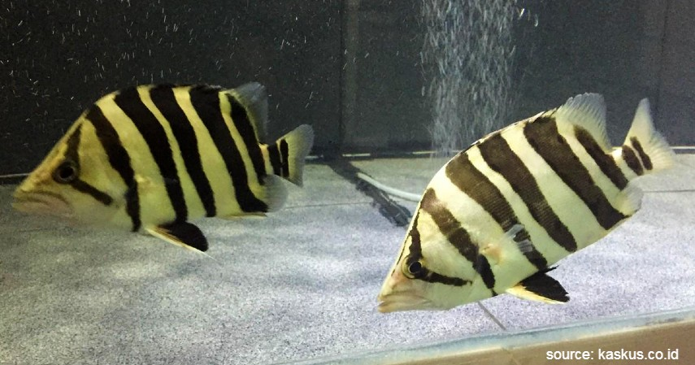

Ikan Datnoid
Ikan datnoid ini juga mempunyai nama lain yaitu datz dan tigerfish. Tigerfish menjadi favorit para pecinta ikan predator untuk peliharaan karena warnanya yang kuning keemasan ditambah dengan loreng hitam tiga hingga empat garis di tubuhnya dan dua garis di sirip ekor
Ikan ini ditemukan di wilayah pertemuan air laut dan air tawar daerah Thailand dan Indonesia. Ada berbagai jenis ikan tigerfish ini seperti datnoid Thailand Utara, Indonesia, dan Papua.
Ukurannya yang secara umum berada dalam kisaran 30 hingga 45 cm membuat ikan ini menjadi primadona di kalangan penghobi ikan.
Perawatan
Penyakit jarang menjadi masalah pada ikan datz, terutama jika Anda selalu merawat lingkungan mereka dengan baik. Jika Anda sudah berusaha sebaik mungkin untuk menjaga kebersihan akuarium, kemungkinan Anda tidak perlu khawatir tentang penyakit atau masalah terkait kebersihan lainnya. Ikan datz suka sekali makan, tetapi Anda harus berhati-hati dalam memberi mereka makan untuk memastikan kualitas air akuarium tidak terganggu. Masalah kualitas air adalah masalah paling umum yang dihadapi ikan datz, jadi jangan memberi mereka makan berlebihan. Ikan datz cenderung buang kotoran dalam volume yang jauh lebih tinggi daripada jenis ikan lainnya. Filter yang baik akan membantu menjaga air tetap bersih, yang sangat penting bagi kesehatan akuarium Anda secara keseluruhan. Jika Anda memilih untuk memberi makan makanan hidup, Anda juga harus berhati-hati dengan apa yang Anda lemparkan ke akuarium. Pastikan cacing atau ikan yang Anda berikan sudah dikarantina sebelumnya dan tidak membawa penyakit apa pun.
Ketika mulai memelihara ikan Tiger Fish, jangan langsung memberikannya dengan pakan pelet. Cobalah untuk memberikannya pakan alami terlebih dahulu, seperti udang, cacing sutera, dan ikan ikan kecil lainnya. Setiap memberikan pakan, ada baiknya untuk mengamati apakah ikan tersebut mau memakannya ataukah tidak. Jika ikan tidak mau memakan pakan tersebut, gantilah pilihan pakan alami lainnya agar ikan tetap memiliki tenaga untuk berenang. Pemberian pakan alami pada ikan, berfungsi agar ikan bisa terbiasa hidup di lingkungan yang baru. Selang beberapa waktu berjalan, barulah untuk memberikan pakan pelet agar membiasakan ikan tersebut. Hal ini perlu dibiasakan, sebab pakan pelet dianggap lebih ekonomis dan lebih praktis. Selain itu, pakan pelet dirasa mampu memberikan gizi yang mencukupi untuk pertumbuhan sang ikan.
Perlu diingatkan bahwa, ikan ini masih tergolong ikan predator, atau bisa dikatakan sebagai ikan ganas. Hal ini dapat dilihat dari belum banyak para budidaya yang berhasil untuk membudidayakan ikan satu ini. Bahkan beberapa ikan harimau satu ini, tampaknya telah ditangkap langsung dari habitat aslinya. Sehingga untuk menjinakkannya, anda perlu menggunakan trik tertentu. Proses penjinakannya, memerlukan proses yang tidak mudah. Pertama, menutup tangki wadah peliharaan terlebih dahulu, kemudian bukalah sedikit demi sedikit. Apabila cara ini tidak berhasil, anda bisa menggunakan alternatif lainnya seperti menanam beberapa tumbuhan air. Tumbuhan ini berfungsi untuk tempat persembunyian Tiger Fish, sehingga ikan tersebut dapat beradaptasi dengan lingkungan barunya sekaligus bermanfaat agar ikan tidak stres.